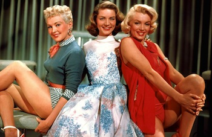

Nov 5 1953 "How To Marry A Millionaire" Is Released A remake of 1933's The Greeks Had a Word for Them, as well as a retread of 20th Century-Fox's favorite plotline, How to Marry a Millionaire was the first Hollywood comedy to be lensed in Cinemascope. Lauren Bacall, Betty Grable and Marilyn Monroe play three models of modest means who rent an expensive Manhattan penthouse apartment and pose as women of wealth. It's all part of a scheme hatched by Bacall to snare rich husbands for herself and her roommates. The near-sighted Monroe is wooed by an international playboy, but ends up settling for the tax-dodging fugitive (David Wayne) who owns the girls' apartment. The knuckle-headed Grable goes off on an illicit weekend in the mountains with a grouchy married executive (Fred Clark), but falls instead for a comparatively poor--but very handsome--forest ranger (Rory Calhoun). And Bacall very nearly lands an aging millionaire (William Powell), but has a sudden attack of conscience and opts instead for the supposedly poverty-stricken chap (Cameron Mitchell) who has been pursuing her since reel one. It turns out that she has actually landed one of the richest men in New York--and upon learning this, our three luscious heroines faint dead away. Before the opening credits roll in How to Marry a Millionaire, we are treated to a "live" orchestral rendition of Alfred Newman's "Street Scene" overture, conducted by Newman himself. In addition to its being the first wide-screen comedy, Millionaire was also the first-ever presentation of the weekly NBC series Saturday Night at the Movies, premiering on the small screen on September 23, 1961.
